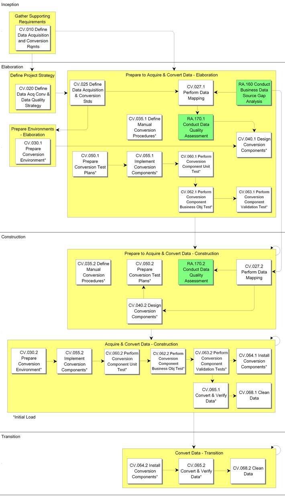

OUM |
Process Overview |
||
Method Navigation |
Current Page Navigation |
||
|
|
||||||||
The objective of the Data Acquisition and Conversion process is to create the components necessary to extract, transform, transport and load the legacy source data to accommodate the information needs of the new system. The data that is required to be converted is explicitly defined, along with its sources. This data may be needed for system testing, training, and acceptance testing as well as for production. In some cases, it is beneficial to convert (some) data at earlier stages to provide as realistic as possible reviews of the components during the development iterations. On the other hand, this may be difficult, as the actual Database Design for the new system is not yet stabilized.
The amount of effort involved with conversion greatly depends on the condition of the data and the knowledge and complexity of the data structure in legacy systems and existing applications. For large projects, where large existing systems will be replaced, and most all of the data needs to be converted, you should consider running this as a separate project in parallel to the development project. In such situations, you need to thoroughly analyze the existing systems, map them to the new data model, and build multiple conversion modules of various complexities. The process includes designing, coding, and testing any conversion modules that are necessary as well as the conversion itself. The cleaning of legacy data is visibly identified as a user and customer project staff task so that it can be staffed and scheduled. If data anomalies exist in the current system(s), or there are an unusual number of exceptions, you should recommend data clean-up to the project sponsor.
The term "ETL" is commonly used to reference the steps of extracting, transforming, and loading of data from data sources to the new target system, which is also sometimes referenced simply as conversion. It should be noted that in some cases the "T" (transformation) of "ETL" may be as minimal as encoding or decoding source data during extraction and loading steps, or no transformation may occur at all in some solutions.
It is important to note that the Data Acquisition and Conversion process has two tasks that encompass initial (one-time) handling of data sourcing, as well as ongoing data loads such as interfaces, but this dual coverage only occurs where there is overlap between the two distinct data handling processes (initial and ongoing).
The following are the two tasks within the CV process that pertain to both one-time, and ongoing data sourcing:
The remainder of the tasks defined in the Data Acquisition and Conversion process apply strictly to the initial (one-time) loading of source data into the new system. The comparable tasks for defining, designing, building, testing, etc. for ongoing data sources such as interfaces are addressed in the normal OUM full lifecycle processes and tasks.
For example, ETL components for initial (one-time) data sources are built in OUM task of Implement Conversion Components (CV.055), and ETL components for ongoing data sources such as interfaces are built in OUM task of Implement Components [IM.050]. There can be functional overlap between the initial and ongoing component development where data sources are being used for both initial and ongoing ETL. In this situation one should attempt to maximize reuse between requirements definition, design, building, etc. of components.
It should also be noted that Conduct Business Data Source Gap Analysis (RA.160), and Conduct Data Quality Assessment (RA.170) apply to both the initial (one-time) and the ongoing data sourcing.
Converted legacy data may be needed for various types of testing, in particular system testing, and acceptance testing, and training as well as for production. In some cases, it is beneficial to even convert (some) data at an earlier stage to provide as realistic as possible reviews of the components during the development iterations. On the other hand, this may be difficult, as the actual Database Design for the new system is not yet stabilized.
It should be noted that the Data Acquisition and Conversion process is sometimes performed as a separate project for some types of engagements. For example, a technology-centric solution is a possible scenario where one might find this project level work partitioning.
Early in the Data Acquisition and Conversion process, the project team determines an overall Data Acquisition, Conversion and Data Quality Strategy (CV.020) to meet the Data Acquisition and Conversion Requirements (CV.010), including both automated and manual methods. These work products include defining the requirements and strategy for both initial load (aka first-time load, one-time historical load, conversion) and ongoing (refresh) loads. At this time, data sources are identified and the overall strategy is defined, in particular for the first-time load, subsequent refresh and to address any specific data quality issues. Analysis is performed on the data sources and a mapping is created between the current state of the source data and the new set of objects that define the target system.
Later in the process, with the detailed analysis completed, the project team designs, codes and tests the conversion components that are used for the initial load only, that is the conversion or the one-time initial load of historical data. Finally, the process ends with executing the conversion/load itself.
The amount of effort involved greatly depends on the condition of the data and the knowledge and complexity of the data structure in the legacy systems and existing applications. For large projects, where large existing systems should be replaced, and most of the data needs to be converted, you should consider running this as a separate project in parallel to the development project. In such situations, you need to thoroughly analyze the existing systems, map them to the new data model, and probably build multiple components of various complexities.
The cleaning of legacy data is visibly identified as a user and customer project staff task so that it can be staffed and scheduled. If data anomalies exist in the current system(s), or there is an unusual number of exceptions, you should recommend data clean-up to the project sponsor.
 This process overview is written from the perspective of a Full Method View, utilizing ALL of the activities and tasks in this process. Therefore, all of the following sections provide comprehensive information. If your project is utilizing a tailored approach (for example, Technology Full Lifecycle View, Application Implementation View, Middleware Architecture View), not everything in this overview may be appropriate for your project. Please keep this in mind, especially when reviewing the Key Work Products and Tasks and Work Products sections. You should use OUM as a guideline for performing all types of information technology projects, but keep in mind that every project is different and that you need to adjust project activities according to each situation. Do not hesitate to add, remove, or rearrange tasks, but be sure to reflect these changes in your estimates and risk management planning. You should also consider the depth to which you address and complete each task based on the characteristics of your particular project or project increment. See Oracle's Full Lifecycle Method for Deploying Oracle-Based Business Solutions for further information on the scalability and adaptability of OUM.
This process overview is written from the perspective of a Full Method View, utilizing ALL of the activities and tasks in this process. Therefore, all of the following sections provide comprehensive information. If your project is utilizing a tailored approach (for example, Technology Full Lifecycle View, Application Implementation View, Middleware Architecture View), not everything in this overview may be appropriate for your project. Please keep this in mind, especially when reviewing the Key Work Products and Tasks and Work Products sections. You should use OUM as a guideline for performing all types of information technology projects, but keep in mind that every project is different and that you need to adjust project activities according to each situation. Do not hesitate to add, remove, or rearrange tasks, but be sure to reflect these changes in your estimates and risk management planning. You should also consider the depth to which you address and complete each task based on the characteristics of your particular project or project increment. See Oracle's Full Lifecycle Method for Deploying Oracle-Based Business Solutions for further information on the scalability and adaptability of OUM.
This process flow for this process follows:

Depending on your project (e.g., large, complex, etc.), the project manager may designate a Data Acquisition and Conversion team leader. In some projects the data conversion effort is a "sub-project" to the overall software implementation effort. If the project manager designates a Data Acquisition and Conversion team leader, they are responsible for leading the Data Acquisition and Conversion process and reviewing the work products. The team leader plans, directs, and monitors the day-to-day work of the team. The team leader assigns work packages to the team members and makes sure they understand the requirements. The team leader is responsible for building team cohesion, motivating the teams, and providing assistance and encouragement to the team members. Each team leader performs the final quality control and quality assurance for the team by reviewing all work products. The team leader also signs off on team work completion and quality. Work that is not up to quality standards is returned. Team leaders review work products from other teams when these work products may impact aspects of the system. The team leader reports the team's progress to the project manager. Refer to Project Management in OUM for additional information on team leaders.
The Data Acquisition and Conversion process starts with the definition of the functional requirements necessary to convert and load data from an existing information system onto the new information system (CV.010). This includes analyzing the potential source and target systems to identify and document the following: data to be converted, functional requirements for extracting and loading the data, requirements for validating and cleaning up both extract and load, and requirements for handling the error conditions. In addition, you document the high-level source data available. This includes reviewing existing models and other descriptive information for the operational and external data sources identifying preferred data sources, identifying the system of record for these sources, and documenting system constraints (for example, batch windows, system interdependencies, access constraints, and availability). Data volumes gathered here feed into the Architecture Requirements and Strategy (TA.020) and ultimately the System Capacity Plan (TA.160).
This data may be needed for system testing, training and acceptance testing as well as production. Following this, the project team determines an overall Data Acquisition, Conversion and Data Quality Strategy (CV.020) to meet those requirements, including both automated and manual methods.
The acquisition needs can be identified by focusing on the following:
The conversion needs can be identified by focusing on the following categories:
As soon as the requirements and the strategy have been documented, analysis is performed on the data sources and a mapping is created between the current state of the source data and the new set of objects. Then you can start on what components need to be designed (CV.040) and implemented (CV.050), and finally tested (CV.055, CV.060, CV.062 and CV.063). In most situations, the conversion is a one-time only process, therefore, the requirements on how the conversion components should be developed are not as stringent as the requirements for the components developed to support the business. However, there might be situations where the conversion needs to run multiple times, for example for different user groups or locations at different points of time.
When the Conversion components are ready and tested, an initial conversion can be done and the data verified (CV.065). Cleaning of data (CV.068) is primarily a user task, with additional support from the customer project staff. The work involved in cleaning legacy data, and in convincing those responsible that their data is inconsistent and needs cleaning should not be underestimated. This may an iterative process, as you after having cleaned data, make a new attempt to convert, and clean data until you have a satisfied result.
The data should preferably be cleaned in the originating systems. However, this is not always possible. Keep in mind that if the legacy system is still used when performing the first conversion, and the the data is cleaned outside the existing system, any data that has been changed or new data that has been added in the existing system since the first conversion will naturally not be included in the final conversion. If you need to clean data outside the existing system, identify all required cleaning actions, and plan to do this after the last conversion to prevent duplication of work.
Finally, when the data has been cleaned and the result is acceptable, and the new system is ready to go production, we do another final conversion into the production database (CV.065). Preferably this kind of conversion has also been tested by converting the data into both the System Test and Acceptance Test Environments.
During Production, these components are executed you populate the production databases with the initial and any historical data that is required.
The tasks and work products for this process are as follows:
| ID | Task | Work Product |
|---|---|---|
Inception Phase |
||
CV.010 |
Define Data Acquisition and Conversion Requirements | Data Acquisition and Conversion Requirements |
Elaboration Phase |
||
CV.020 |
Define Data Acquisition, Conversion and Data Quality Strategy | Data Acquisition, Conversion and Data Quality Strategy |
CV.025 |
Define Data Acquisition and Conversion Standards | Data Acquisition and Conversion Standards |
CV.027.1 |
Perform Data Mapping | Data Mapping |
CV.030.1 |
Prepare Conversion Environment (Initial Load) | Conversion Environment (Initial Load) |
CV.035.1 |
Define Manual Conversion Procedures (Initial Load) | Manual Conversion Procedures (Initial Load) |
CV.040.1 |
Design Conversion Components (Initial Load) | Conversion Component Designs (Initial Load) |
CV.050.1 |
Prepare Conversion Test Plans (Initial Load) | Conversion Test Plans (Initial Load) |
CV.055.1 |
Implement Conversion Components (Initial Load) | Conversion Components (Initial Load) |
CV.060.1 |
Perform Conversion Component Unit Test (Initial Load) | Unit-Tested Conversion Components (Initial Load) |
CV.062.1 |
Perform Conversion Component Business Object Test (Initial Load) | Business Object-Tested Conversion Components (Initial Load) |
CV.063.1 |
Perform Conversion Component Validation Test (Initial Load) | Validation-Tested Conversion Components (Initial Load) |
Construction Phase |
||
CV.027.2 |
Perform Data Mapping | Data Mapping |
CV.030.2 |
Prepare Conversion Environment (Initial Load) | Conversion Environment (Initial Load) |
CV.035.2 |
Define Manual Conversion Procedures (Initial Load) | Manual Conversion Procedures (Initial Load) |
CV.040.2 |
Design Conversion Components (Initial Load) | Conversion Component Desigs (Initial Load) |
CV.050.2 |
Prepare Conversion Test Plans (Initial Load) | Conversion Test Plans (Initial Load) |
CV.055.2 |
Implement Conversion Components (Initial Load) | Conversion Components (Initial Load) |
CV.060.2 |
Perform Conversion Component Unit Test (Initial Load) | Unit-Tested Conversion Components (Initial Load) |
CV.062.2 |
Perform Conversion Component Business Object Test (Initial Load) | Business Object-Tested Conversion Components (Initial Load) |
CV.063.2 |
Perform Conversion Component Validation Test (Initial Load) | Validation-Tested Conversion Components (Initial Load) |
CV.064.1 |
Install Conversion Components (Initial Load) | Installed Conversion Components (Initial Load) |
CV.065.1 |
Convert And Verify Data (Initial Load) | Converted And Verified Data (Initial Load) |
CV.068.1 |
Clean Data | Clean Legacy Data |
Transition Phase |
||
CV.064.2 |
Install Conversion Components (Initial Load) | Installed Conversion Components (Initial Load) |
CV.065.2 |
Convert And Verify Data (Initial Load) | Converted And Verified Data (Initial Load) |
CV.068.2 |
Clean Data | Clean Legacy Data |
The objectives of the Data Acquisition and Conversion process are:
Refer to Key Work Products for a complete list of key work products in OUM.
The following roles are required to perform the tasks within this process:
| Role ID | Name | Responsibility |
|---|---|---|
Implementing Organization |
||
| APS | Application / Product Specialist | Provide knowledge and guidance regarding the functionality and capabilities of the product(s) being implemented. |
| BA | Business Analyst | |
| DBA | Database Administrator | |
| DV | Developer | Lead the design and build and test of the data conversion components. Design and build the conversion components. Develop test specifications and perform the test of the components. Plan and coordinate the initial test conversion. Run the conversion components for a subset of production data and verify the production data. Track and analyze the problems identified with conversion components and production data. |
| SAD | System Administrator | |
| SAN | System Analyst | Identify and document the source systems to be converted. Prepare the functional conversion requirements. Document the special considerations and technical assumptions. |
| SA | System Architect | |
| SA (IA) | System Architect (Information Architect) |
Formulate the projects Data Acquisition, Conversion and Data Quality Strategy. Contact appropriate technical experts for advice if necessary. Develop a testing strategy for data conversion modules. Identify, assess and mitigate data conversion risks. Define issue-tracking procedures. Review the Designed Data Conversion Components. Review the Implemented Conversion Components code. Analyze the problems identified with the legacy data and refine strategies. Check the quality of the Data Acquisition and Control process. Preferably, this should be done by a system architect that specializes in Information Architecture. |
| TE | Tester | Perform conversion component business object test and validation test. |
Customer (User) |
||
| KEY | Ambassador User | Select a representative subsection of production data for test conversion. Review and suggest amendments to be made to make sure the data is consistent and complete. If the data must be manually cleaned, the ambassador user should be charged with making these modifications. |
| CDA | Customer Data Administrator | Provide the conversion requirements, special considerations and technical assumptions. Provide information on existing systems. Analyze the problems identified with the legacy data. Make sure that the converted data meets the requirements of the business. Review data provided for testing purposes to make sure it is consistent and complete. |
| CDDBA | Customer Development DBA | |
| CPDBA | Customer Production DBA | Create and run a master script that creates the necessary temporary tables. |
| CPM | Customer Project Manager | |
| CSM | Customer Staff Member | |
| CSA | Customer System Architect | |
| ISM | IS Manager | |
| OS | IS Operations Staff | Provide information on data to be converted and current application structure. Assist with privileged access to external systems. |
| SS | IS Support Staff | Assist in interpretation of rejected records. |
| USR | User | Provide information on data to be converted. |
The critical success factors of this process are:

Copyright © 2006, 2016, Oracle and/or its affiliates. All rights reserved.